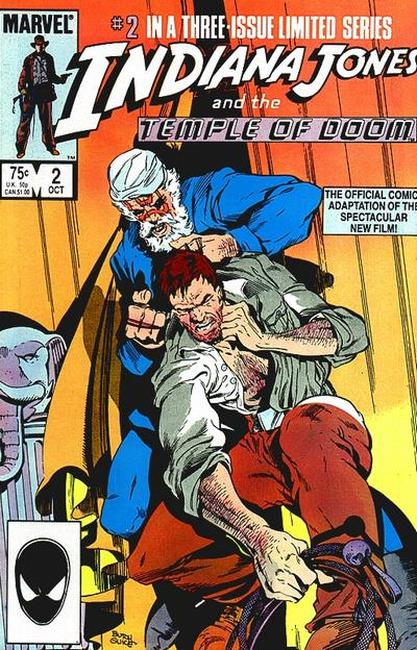

Indiana Jones and the Temple of Doom is a 1984 American action-adventure film directed by Steven Spielberg. It is the second instalment in the Indiana Jones franchise and a prequel to the 1981 film Raiders of the Lost Ark, featuring Harrison Ford reprising his role as the title character. After arriving in North India, Indiana Jones is asked by desperate villagers to find a mystical stone and rescue their children from a Thuggee cult practising child slavery, black magic and ritual human sacrifice in honor of the goddess Kali.
Executive producer and co-writer George Lucas decided to make the film a prequel as he did not want the Nazis to be the villains again. After three rejected plot devices, Lucas wrote a film treatment that resembled the film's final storyline. Lawrence Kasdan, Lucas's collaborator on Raiders of the Lost Ark, turned down the offer to write the script, and Willard Huyck and Gloria Katz were hired as his replacements, with the screenplay partly based upon the 1939 film Gunga Din.
The film was released to financial success, but initial reviews were mixed, which criticized its violence, later contributing to the creation of the PG-13 rating. However, critical opinion has improved since 1984, citing the film's intensity and imagination. Some of the film's cast and crew, including Spielberg, retrospectively view the film in a negative light, partly due to the film being the darkest and most overtly violent Indiana Jones film. The film has also been the subject of controversy due to its portrayal of India and Hinduism.

Script by David Michelinie
Illustrations by Jackson Guice, Aikin & Garvey
Marvel Comics' official comic adaptation of the 1984 movie "Indiana Jones and the Temple of Doom." In this issue, after almost getting killed in a Shanghai night club, Indiana Jones winds up in an airplane with singer Willie Scott and his friend Short Round. But the plane ride leads the trio to a desolate village which needs Indy's help in part one of this adaptation.
Indy and his friends are now guests in the Pankot Palace. But something strange is going on in the palace and when Indy investigates, he discovers an evil temple in part two of this adaptation.
Indy and his friends are captured by the Thuggee cult and then have to find a way to escape and stop their evil reign in the final confrontation.